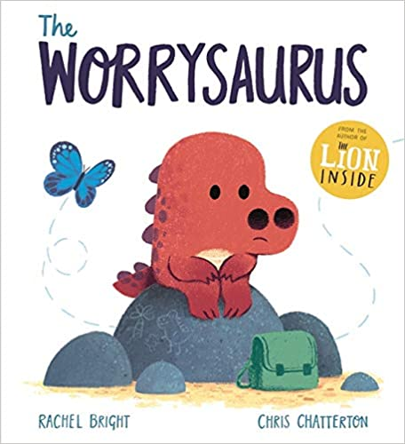

word by Rachel Bright, picture by Chris Chatterton
On a hot and sunny morning, under lovely clear blue skies, A little Worrysaurus was opening his eyse.
He brushed his tiny pointy teeth, then washed his top and tail. He packed a little bag of snacks and set off on a trail. He skipped along with happy legs, across the golden sand, and thought about the day that he had plotted, sketched, and planned.
A lovely yummy picnic, a delicious summer spread. Worrysaurus liked it when he knew what lay ahead.
But he hadn't gotten far, you see, it hadn't been that long, before his busy head dreamed up some things that might go wrong. Had he made enough to eat today? And brought enough to drink? This Worrysaurus often was a one to overthink.
"What if I get lost?" he thought, "Or trip and have a fall?" His happy legs were slowing to a snuffly, shuffly crawl. Worrysaurus liked it when he felt he was prepared. Unexpected happenings... they made him feel quite scared. So when...
...suddenly from nowhere, a lizard skittered by, shouting in a squeaky yelp and pointing at the sky: "I think a storm is coming! I heard it's on its way!" Well, that really put a cloud above his Worrysaurus day.
"A storm?" said Worrysaurus, "When it's so dry and hot and sunny?" But the news became a butterfly that flittered in his tummy. "I'm not ready for the rain," he said. "I haven't got my wellies!" His teeth began to chatter and his knees - they turned to jellies. And all the while, the sky was blue! The sun it shone and shone. But now his lovely picnic thoughts were definitely gone.
Should he find a cave to shelter? Or run back home and hide? His little worry butterfly grew very strong inside.
But then he thought of something that his mommy liked to say: "Oh, my little Worrysaurus, chase that butterfly away! Don't you worry now, my lovely, you must try not to fret. If it's not a happy ending, then it hasn't ended yet."
So he reached into his bag just then, find a little tin. It helped himm with his worries - it had happy things wihtin. A special stick, his Teddy Ned, a pebble, and a letter. And he held them one by one... so everything felt better.
Then he put away his tin and all the worries in his head... Freed his little butterfly for happy thoughts instead. "I'll stand up tall. I can be strong. I'll chase my fears away! All is good and all is well and everything's OK."
And with those little wordlings he calmed his busy brain. Since when the sun is shining, why worry it will rain?
So he shared his little picnic with the lizard in the sun, and they laughed at all their worrying and really had some fun. Since when you're in the moment, there's no need to run or hide. And then the only butterflies will be the ones outside.
05/15/2023